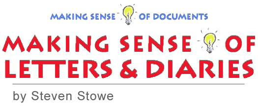

In an attic or an online archive, coming across personal correspondence
and diaries can open a tantalizing window into past lives. This guide
offers an overview of letters and diaries as historical sources and
how historians use them, tips on what questions to ask when reading
these personal texts, an annotated bibliography, and a guide to finding
and using letters and diaries online. Steven Stowe teaches history at
Indiana University, Bloomington. He is the author of Intimacy and
Power in the Old South (Johns Hopkins University Press, 1987) and,
most recently, editor of A Southern Practice: The Diary and Autobiography
of Charles A. Hentz, M.D. (University Press of Virginia, 2000).
Published online July 2002. Cite as: Steven Stowe, "Making Sense of Letters and Diaries," History Matters: The U.S. Survey Course on the Web,
http://historymatters.gmu.edu/mse/letters/, July 2002.